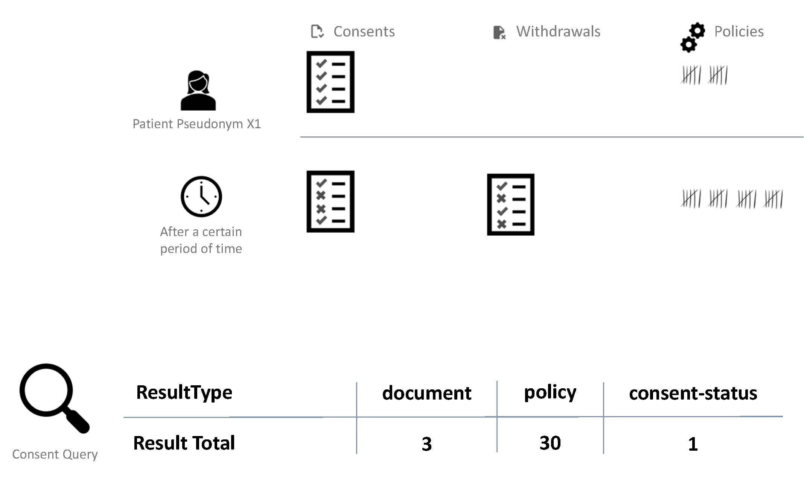

2025.2.0 - ci-build
IGTTPFHIRGatewaygICS - Local Development build (v2025.2.0) built by the FHIR (HL7® FHIR® Standard) Build Tools. See the Directory of published versions
Konfiguration
FHIR Consent Search: Strukturelle Bedeutung für Consent-Ressourcen und Anpassung per ResultType
Publikation und Hintergründe
Im IG der HL7-D AG Einwilligungsmanagement wird die Bedeutung des Parameters ResultType umfassend erläutert.

Erläuterung: Die ursprüngliche Einwilligung einer Person führt zu einer Consent-Ressource, die einer bestimmten Anzahl von Policies entspricht. Im Laufe der Zeit kann die Person ihre Einwilligung zur Teilnahme an einem Vorhaben oder Projekt aktualisieren oder widerrufen. Dadurch erhöht sich die Menge der zu analysierenden Dokumente und Einwilligungspolicies.
Dank ResultType können die vorliegenden Einwilligungsinformationen der betroffenen Person als individuelles Set von Einwilligungspolicies (policy), als Dokumente (document) oder als vollständig analysierter aggregierter Einwilligungsstatus (consent-status) abgefragt werden.
Quelle: Publikation
Default-ResultType und Steuerung auf Request-Ebene
Die Ergebnisse der FHIR Consent Suche sind im gICS per DEFAULT policy-spezifisch, da ein Patient unterschiedliche Einwilligungen und auch Widerrufe zu unterschiedlichen Zeitpunkten unterzeichnet haben kann. Somit ändert sich das Set von zulässigen Policies des Patienten ('Signed Policies') über die Zeit regelhaft.
In der Standardkonfiguration wird bei Consent-Suchanfragen je Signed Policy im gICS eine separate FHIR Consent Resource erzeugt. Das Total des SearchSet-Bundle repräsentiert also in der Standard-Konfiguration die Anzahl der jeweiligen SignedPolicies mit Status permit.
Die Angabe des ResultType wirkt sich auf FHIR Search API Ergebnisse aus. Die Ergebnisse von gICS-Operations werden dadurch nicht verändert.
Je Request kann unabhängig von der Konfiguration des Systems angegeben werden, welche Art von Ergebnis (policy, document, consent-status) man im Response bekommen möchte.
GET [base]/Consent
?category=http://fhir.de/ConsentManagement/CodeSystem/
ResultType|consent-status
&domain:identifier=MII
&patient.identifier=dic_810MT
Anpassung Default-ResultType auf System-Ebene
Der Default-ResultType des gICS ist auf Wunsch konfigurierbar. In der System-Konfigurationsdatei ttp-fhir.env kann der Wert TTP_FHIR_GICS_CONSENT_SEARCH_DEFAULT_RESULT_TYPE entsprechend angepasst werden.
Der so festgelegte Default-ResultType gilt für alle im gICS vorhandenen Domains.
Hinweise für die Medizininformatik-Initiative / das DIZ-Dashboard
Bitte lesen Sie die Nutzungsempfehlung zur Verwendung von ResultType in der MII.
Bitte folgen Sie den Herstellerempfehlungen zur Ermittlung von Kennzahlen für das DIZ-Dashboard.
Anpassung von Profilvorgaben und Terminologien auf Domain-, Template- und Modulebene
Wenn gICS-Inhalte in Form von FHIR-Ressourcen vom TTP-FHIR-Gateway bereitgestellt werden, werden standardmäßig gICS-spezifische Referenzen und Kodierungen verwendet, z. B. für Antwortoptionen in Fragebögen, Verweise auf Fragen in Einwilligungsmodulen (TemplateFrame) und Policy-Semantik (Level2-Provisions der Consent-Ressource).
Diese können mithilfe entsprechender externer Eigenschaften (ExternalProperties) konfiguriert werden, beispielsweise über die gICS-Schnittstelle, oder durch Importieren eines benutzerdefinierten Vorlagenimportformats angepasst werden. Die folgenden Tabellen zeigen externe Eigenschaften, die bei der Erstellung von FHIR-Ressourcen berücksichtigt werden.
Änderungen an externen Eigenschaften sind auch nachträglich zur Laufzeit für bereits finalisierte und aktiv genutzte Vorlagen möglich, z. B. durch Importieren aktualisierter Einwilligungsvorlagen (aktivieren Sie das Kontrollkästchen neben
allowUpdates).
ExternalProperties auf Domain-Ebene
| Scope | ExternalProperty | Example | Description |
|---|---|---|---|
| Domain | fhirSafeSignerIdType |
fhirSafeSignerIdType = Pseudonym |
In gICS, the signing participant is represented by 1-n participant IDs. The number and type of participant IDs are determined by the domain configuration. If more than one SignerIdType is configured within a consent domain (e.g. pseudonym, case numbers, patient ID), the first SignerIdType is used by default in FHIR Consent exports as the person identifier based on the FHIR Consent Patient in FHIR Consent. this can be adjusted if necessary by defining an external property fhirSafeSignerIdType for the respective domain. |
| Domain | fhirForceProfileConsent |
fhirForceProfileConsent = https://ths-greifswald.de/fhir/StructureDefinition/gics/Consent |
Force default export of consent resources within the whole domain in gICS-specific Profile |
| Domain | fhirForceProfileResearchStudy |
fhirForceProfileResearchStudy = https://ths-greifswald.de/fhir/StructureDefinition/gics/ResearchStudy/ConsentDomain |
Force default export of ResearchStudy resources in gICS-specific Profile. DEFAULT profile is HL7-D WG ConsentManagement http://fhir.de/ConsentManagement/StructureDefinition/Domain/ResearchStudy |
| Domain | fhirForceProfileDocumentReference |
fhirForceProfileDocumentReference = https://www.medizininformatik-initiative.de/fhir/modul-consent/StructureDefinition/mii-pr-consent-documentreference |
Force default export of document reference resources (e.g. document scans) based on the specific domain in MII KDS Consent-specific Profile for document reference |
| Domain | fhirForceProfileProvenance |
fhirForceProfileProvenance = https://www.medizininformatik-initiative.de/fhir/modul-consent/StructureDefinition/mii-pr-consent-provenance |
Force default export of provenance resources (e.g. signatures or references on scans) based on the specific domain in MII KDS Consent-specific Profile for provenance |
| SignatureGroup je Domain | fhirSignatureTypeSystem |
fhirSignatureTypeSystem = mySystem1 |
Customize provenance.signature.type.system for specific SignatureGroup within a specifc Domain. Requires additional property fhirSignatureTypeCode |
| SignatureGroup je Domain | fhirSignatureTypeCode |
fhirSignatureTypeCode = myCode1 |
Customize provenance.signature.type.code for specific SignatureGroup within a specifc Domain. Requires additional property fhirSignatureTypeSystem |
ExternalProperties auf Template-Ebene
| Scope | ExternalProperty | Example | Description |
|---|---|---|---|
| Template | fhirPolicyValueSet |
fhirPolicyValueSet = urn:oid:2.16.840.1.113883.3.1937.777.24.5.3 |
Default value set to be used for Consent.Provision.Coding. Affects all policies assigned to the template. |
| Template | fhirAnswerCodeSystem |
fhirAnswerCodeSystem = 2.16.840.1.113883.3.1937.777.24.5.2 |
Individualisation of answers and answer options for FHIR Questionnaire and FHIR. Use with Questionnaire.Item.Item.AnswerValueset QuestionnaireResponse through selected external properties. |
| Template | fhirAnswerValueSet |
fhirAnswerValueSet = https://www.medizininformatik-initiative.de/fhir/ValueSet/MiiConsentAnswerValueSet |
Individualisation of answers and answer options for FHIR Questionnaire. Use with Questionnaire.Item.Item.AnswerValueset |
| Template | fhirAnswerCodeYes |
fhirAnswerCodeYes = 2.16.840.1.113883.3.1937.777.24.5.2.1 |
Individualisation of answers and answer options for FHIR Questionnaire. Use with Questionnaire.Item.Item.Initial and QuestionnaireResponse.Item.Anwer |
| Template | fhirAnswerCodeNo |
fhirAnswerCodeNo = 2.16.840.1.113883.3.1937.777.24.5.2.2 |
Individualisation of answers and answer options for FHIR Questionnaire. Use with Questionnaire.Item.Item.Initial and QuestionnaireResponse.Item.Anwer |
| Template | fhirAnswerCodeUnknown |
fhirAnswerCodeUnknown = 2.16.840.1.113883.3.1937.777.24.5.2.3 |
Individualisation of answers and answer options for FHIR Questionnaire. Use with Questionnaire.Item.Item.Initial and QuestionnaireResponse.Item.Anwer. |
| Template | fhirAnswerDisplayYes |
fhirAnswerDisplayYes = valid |
Individualisation of answers and answer options for FHIR Questionnaire. Use with Questionnaire.Item.Item.Initial and QuestionnaireResponse.Item.Anwer |
| Template | fhirAnswerDisplayNo |
fhirAnswerDisplayNo = invalid |
Individualisation of answers and answer options for FHIR Questionnaire. Use with Questionnaire.Item.Item.Initial and QuestionnaireResponse.Item.Anwer |
| Template | fhirAnswerDisplayUnknown |
fhirAnswerDisplayUnknown = unknown |
Individualisation of answers and answer options for FHIR Questionnaire. Use with Questionnaire.Item.Item.Initial and QuestionnaireResponse.Item.Anwer |
| Template | fhirPolicyUri |
fhirPolicyUri = urn:oid:2.16.840.1.113883.3.1937.777.24.2.1790 |
Consent.policy.uri to uniquely identify the version of the MII Broad Consent |
| Template | fhirConsentCategory |
fhirConsentCategory = 2.16.840.1.113883.3.1937.777.24.2.184 |
Consent.category.coding to uniquely identify the MII Broad Consent |
| Template | fhirForceProfileConsent |
fhirForceProfileConsent = https://www.medizininformatik-initiative.de/fhir/modul-consent/StructureDefinition/mii-pr-consent-einwilligung |
Force default export of consent resources based on the specific template in MII KDS Consent-specific Profile |
| Template | fhirForceProfileDocumentReference |
fhirForceProfileDocumentReference = https://www.medizininformatik-initiative.de/fhir/modul-consent/StructureDefinition/mii-pr-consent-documentreference |
Force default export of document reference resources (e.g. document scans) based on the specific template in MII KDS Consent-specific Profile for document reference |
| Template | fhirForceProfileProvenance |
fhirForceProfileProvenance = https://www.medizininformatik-initiative.de/fhir/modul-consent/StructureDefinition/mii-pr-consent-provenance |
Force default export of provenance resources (e.g. signatures or references on scans) based on the specific template in MII KDS Consent-specific Profile for provenance |
ExternalProperties auf Modul-Ebene
| Scope | ExternalProperty | Example | Description |
|---|---|---|---|
| Module | fhirQuestionCode |
fhirQuestionCode = 2.16.840.1.113883.3.1937.777.24.2.1594 |
Individualisation of FHIR Questionnaire.Item.linkId through selected external properties. Consideration for FHIR Element TemplateFrame (Questionnaire.Item.Code and linkId) and QuestionnaireComposed.Item.Code |
Unterstützte Profile und Defaults
ExternalProperty fhirForceProfileConsent
-
DEFAULT: HL7 Deutschland Arbeitsgruppe Einwilligungsmanagement Profil:
http://fhir.de/ConsentManagement/StructureDefinition/Consent
Details unter https://ig.fhir.de/einwilligungsmanagement/stable/IGEinwilligungsmanagement.html -
MII Kerndatensatz Consent Profil:
https://www.medizininformatik-initiative.de/fhir/modul-consent/StructureDefinition/mii-pr-consent-einwilligung
Details unter https://www.medizininformatik-initiative.de/Kerndatensatz/Modul_Consent/IGMIIKDSModulConsent-TechnischeImplementierung-FHIRProfile-Consent.html -
gICS-spezifisches Consent Profil mit einigen Erweiterungen:
https://ths-greifswald.de/fhir/StructureDefinition/gics/Consent
Details unter https://www.ths-greifswald.de/gics/fhir